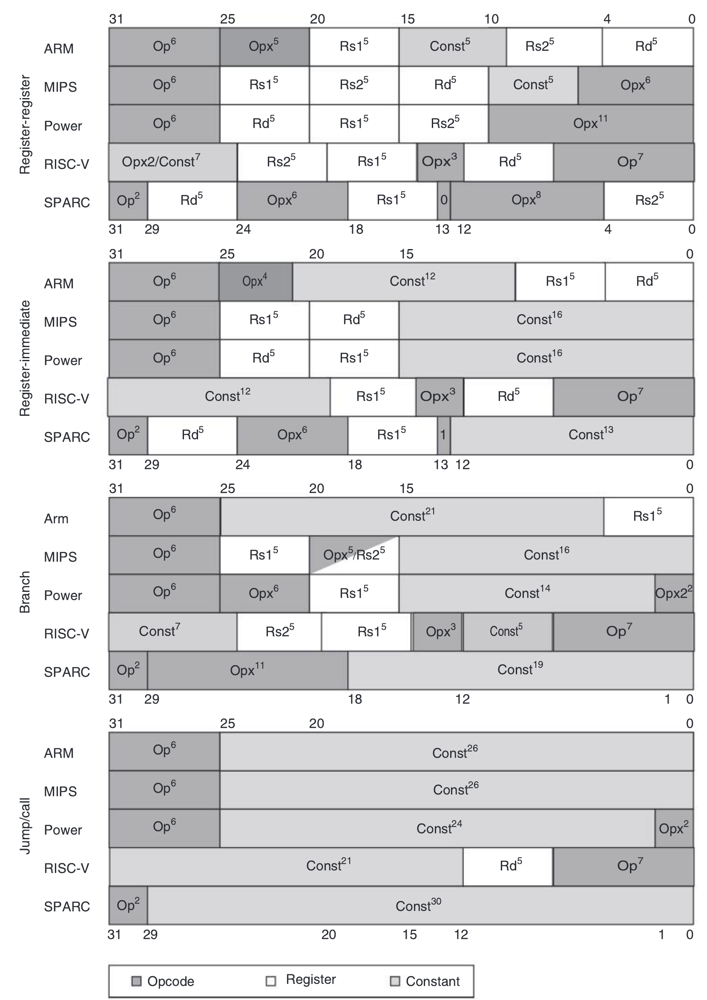
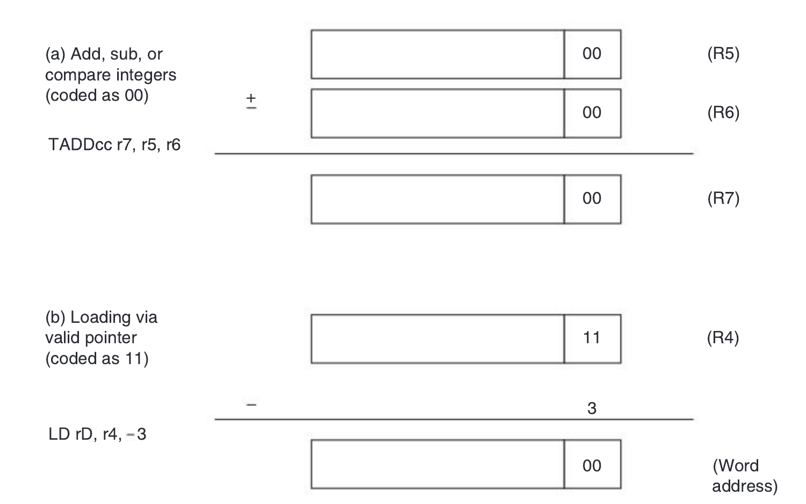

K.2 桌面机、服务器和嵌入式计算机的 RISC 体系结构概览
引言
本节介绍两组精简指令系统计算机（RISC，Reduced Instruction Set Computer）体系结构。第一组是用于桌面机和服务器的 RISC，以及 PMD 处理器：
- Advanced RISC Machines 的 ARMv8，即 64 位 ISA AArch64；
- MIPS64 第 6 版，即最新的 64 位 ISA；
- Power 3.0 版，它合并了早期的 IBM Power 体系结构和 PowerPC 体系结构；
- RISC-V，具体说是 RISC-V 的 64 位扩展 RV64G；
- SPARCv9，即 64 位 ISA。
从图 K.1 可以看出，这些体系结构非常相似。
图 K.1 五种桌面机、服务器和 PMD 体系结构最新版本的概况（各体系结构都有更早的版本）。除了数据寻址方式的数目和一些指令系统细节之外，这些体系结构的整数指令系统非常相似。可与图 K.29 对比。在 ARMv8 中，寄存器 31 的值为 0（和其他体系结构中的寄存器 0 一样），但在 load 或 store 中使用时，它就是当前的栈指针，即一个专用寄存器。基于 SP 的寻址既可以看作一种单独的寻址方式（汇编助记符就是这样处理的），也可以看作普通的「寄存器 + 偏移量」寻址方式（指令编码就是这样处理的）
| ARMv8 | MIPS64 R6 | Power v3.0 | RV64G | SPARCv9 | |
|---|---|---|---|---|---|
| 最初发布时间（基础 ISA） | 1986 | 1986 | 1990 | 2016 | 1987 |
| 本版 ISA 的时间 | 2011 | 2014 | 2013 | 2016 | 2008 |
| 指令长度（位） | 32 | 32 | 32 | 32 | 32 |
| 地址空间（大小，模型） | 64 位（平坦） | 64 位，平坦 | 64 位，平坦 | 64 位，平坦 | 64 位，平坦 |
| 数据对齐 | 最好对齐 | 最好对齐 | 不要求对齐 | 最好对齐 | 对齐 |
| 数据寻址方式 | 8（包括比例变址、前/后自增） | 1（另有 1 种仅用于浮点） | 4 | 1 | 2 |
| 整数寄存器（数目，模型，大小） | 31 个 GPR × 64 位，另加栈指针 | 31 个 GPR × 64 位 | 31 个 GPR × 64 位 | 31 个 GPR × 64 位 | 31 个 GPR × 64 位 |
| 独立的浮点寄存器 | 32 × 32 或 32 × 64 位 | 32 × 32 或 32 × 64 位 | 32 × 32 或 32 × 64 位 | 32 × 32 或 32 × 64 位 | 32 × 32 或 32 × 64 位 |
| 浮点格式 | IEEE 754 单精度、双精度 | IEEE 754 单精度、双精度 | IEEE 754 单精度、双精度 | IEEE 754 单精度、双精度 | IEEE 754 单精度、双精度 |
另有两种重要的 RISC 处理器已经成为历史，它们和上面列出的体系结构几乎一样。一是 DEC Alpha，Digital Equipment Corporation 在 1992 年到 2004 年间生产，与 MIPS64 几乎完全相同。二是惠普的 PA-RISC，HP 从大约 1986 年一直生产到 2005 年，此后由 Itanium 取代。PA-RISC 与 Power ISA 最接近；Power ISA 出自 IBM Power 设计，而 IBM Power 本身又是 IBM 801 的后代。
第二组是为低端应用设计的嵌入式 RISC：
- Advanced RISC Machines 的 Thumb-2：一种 32 位指令系统，含 16 位和 32 位两种指令，兼有 ARMv7 和 ARMv8 的特性；
- microMIPS64：MIPS64 指令系统的一个版本，带有 16 位指令；
- RISC-V 压缩扩展（RV64GC）：在 RV64G 上增加的一组 16 位指令。
RV64GC 和 microMIPS64 都有对应的 32 位版本，即 RV32GC 和 microMIPS32。
后面比较桌面机和服务器体系结构时，会考察它们 32 位或 64 位基础指令系统之间的差异，因此对嵌入式体系结构的讨论集中在 16 位指令上。从图 K.2 可以看出，这些嵌入式体系结构也很相似。三者的 16 位指令都是 32 位指令的变体，通常只能使用一部分寄存器。这样做是为了用 16 位版本代替常用的 32 位指令，从而缩小代码。以 RV32GC 或 Thumb-2 为例，加入 16 位指令后，代码长度减小到只用 32 位 ISA（RV32G 或 ARMv7）时的大约 0.73。
图 K.2 三种近期的嵌入式应用体系结构概况。三者都是在一种基础指令系统上加 16 位扩展。除了数据寻址方式的数目和一些指令系统细节之外，这些体系结构的整数指令系统都很相似。可与图 K.29 对比。MIPS 指令系统较早有一个 16 位版本，称为 MIPS16，1995 年推出，后来由 microMIPS32 和 microMIPS64 取代。最早的 Thumb 体系结构只有 16 位指令，1996 年推出。Thumb-2 主要建立在 32 位 ARM 指令系统 ARMv7 的基础上，提供 16 个寄存器。RISC-V 还定义了 RV32E，它只有 16 个寄存器，包含 16 位指令，不能有浮点。面向嵌入式应用的实现似乎大多选择 RV32C 或 RV64GC
| microMIPS64 | RV64GC | Thumb-2 | |
|---|---|---|---|
| 发布时间 | 2009 | 2016 | 2003 |
| 指令长度（位） | 16/32 | 16/32 | 16/32 |
| 地址空间（大小，模型） | 32/64 位，平坦 | 32/64 位，平坦 | 32 位，平坦 |
| 数据对齐 | 对齐 | 最好对齐 | 对齐 |
| 数据寻址方式 | 2 | 1 | 6 |
| 整数寄存器（数目，模型，大小） | 31 个 GPR × 64 位 | 31 个 GPR × 64 位 | 15 个 GPR × 32 位 |
| 大多数 16 位指令可访问的整数寄存器（这些指令使用较短的寄存器说明符） | 8 个 GPR + SP + GP + RA；GPR 为 0、2–7、17，或 2–7、16、17 | 8 个 GPR + SP；GPR 为 8–15 | 8 个 GPR + SP，× 32 位 |
这三种体系结构的一个关键区别，在于基础 32 位 ISA 的结构：
- RV64GC 的 32 位指令与 RV64G 完全相同。之所以能做到这一点，是因为 RISC-V 从一开始就为 16 位选项做了规划，把转移地址和跳转地址都规定为以 16 位为边界。
- microMIPS64 的基础 ISA 是 MIPS64，只改了一处：转移和跳转的偏移量按 16 位对齐而不是按 32 位对齐来解释。（microMIPS 还占用了 MIPS64 中为用户自定义指令系统扩展保留的编码空间；这类扩展不属于基础 ISA。）
Thumb-2 的做法略有不同。Thumb-2 的 32 位指令大多是 ARMv7 指令的子集，但不包括 ARMv8 中已经删去的某些特性，例如大多数指令都能条件执行、可以把 PC 当作通用寄存器写入。Thumb-2 还包含 ARMv8 新引入的几十条指令，具体包括位字段操作、附加的系统指令和同步支持。因此，Thumb-2 的 32 位指令构成了一种独有的 ISA。
MIPS 和 ARM 较早的 16 位指令系统（分别是 MIPS16 和 Thumb）采用的做法是另设一种模式：通过一次过程调用进入这种模式，把控制转到一段只使用 16 位指令的代码。这种 16 位指令系统并不完整，只打算用于对代码长度要求苛刻的用户程序。
描述这些体系结构还有一点麻烦：有些较老的 RISC 多年来一直在扩展。我们决定介绍各体系结构的最新版本：桌面机/服务器/PMD 方面，是 ARMv8（64 位体系结构 AArch64）、MIPS64 R6、Power v3.0、RV64G 和 SPARC v9；嵌入式方面，是 microMIPS64、RV64GC 和 Thumb-2 这几种 ISA 的 16 位子集。
本节其余部分的安排如下。先讨论这些 RISC 体系结构的寻址方式和指令格式，然后分五步概述指令：
- RV64G 核心中的指令，附录 A 已经介绍过；
- RV64G 和 RV64GC 中没有、但其他体系结构中至少有两种具备的指令，按功能组织和介绍，例如支持扩展整数算术的指令；
- ARM、MIPS、Power 或 SPARC 特有的指令组，按功能组织；
- 桌面机/服务器/PMD RISC 的多媒体扩展；
- 嵌入式 RISC 的数字信号处理扩展。
我们收录了这些体系结构的大部分指令，但没有逐条全部收录。Power 和 ARM 两种 ISA 的指令很多，未收录的指令也尤其多。
寻址方式和指令格式
图 K.3 列出了桌面机/服务器/PMD 体系结构支持的数据寻址方式。除 ARM 之外，这些体系结构都有一个寄存器，用于寻址时值总是 0。因此，把寄存器 0 当作偏移量寻址的基址，就能合成范围有限的绝对寻址方式。（在 PowerPC 中，这个寄存器可以由算术逻辑部件（ALU）的运算修改，但用于地址计算时总是 0。）同样，用偏移量为 0 的偏移量寻址，就能合成寄存器间接寻址。寻址方式简单，是 RISC 体系结构的一个显著特点。
从图 K.4 可以看出，嵌入式体系结构限制了 16 位指令能访问的寄存器：大多数指令通常只能访问 8 个寄存器，只有少数特殊指令可以访问其他寄存器。图 K.5 列出了嵌入式体系结构在 16 位指令模式下支持的数据寻址方式。这些 load/store 指令不仅限制了地址计算可用的寄存器，还大大缩短了用作偏移量的立即数字段。
图 K.3 桌面机体系结构支持的数据寻址方式概况。B、H、W、D 表示哪些数据类型可以使用该寻址方式。注意，ARM 有两种不同的带更新寻址方式，其中一种 Power 也有
| 寻址方式 | ARMv8 | MIPS64 R6 | Power v3.0 | RV64G | SPARCv9 |
|---|---|---|---|---|---|
| 寄存器 + 偏移量（偏移量寻址或基址寻址） | B, H, W, D | B, H, W, D | B, H, W, D | B, H, W, D | B, H, W, D |
| 寄存器 + 寄存器（变址寻址） | B, H, W, D | B, H, W, D | B, H, W, D | ||
| 寄存器 + 比例变换后的寄存器（比例变址寻址） | B, H, W, D | W, D | |||
| 寄存器 + 寄存器 + 偏移量 | B, H, W, D | ||||
| 寄存器 + 偏移量，并用有效地址更新寄存器（带更新的基址寻址） | B, H, W, D | B, H, W, D | |||
| 寄存器，并把寄存器更新为寄存器 + 偏移量（带更新的寄存器寻址） | B, H, W, D | ||||
| 寄存器 + 寄存器，并用有效地址更新寄存器（带更新的变址寻址） | B, H, W, D | B, H, W, D | |||
| PC 相对（PC + 偏移量） | W, D | W, D |
图 K.4 microMIPS64、RV64GC 和 Thumb-2 的 16 位子集的寄存器编码，包括核心通用寄存器，以及某些指令可以访问的专用寄存器
| 寄存器说明符 | microMIPS64 | RV64GC | Thumb-2 |
|---|---|---|---|
| 3 位 | 2–7、16、17 | 8–15 | 0–7 |
| 栈指针寄存器 | 29 | 2 | 0（用于 load/store 时） |
| 全局指针寄存器 | 28 | ||
| 返回地址寄存器 | 31 | 1 | 14 |
| 使用专用寄存器 | 栈指针或全局指针；5 位偏移量 | 栈指针；5 位偏移量 | 栈指针；8 位偏移量 |
图 K.5 嵌入式体系结构支持的数据寻址方式概况。microMIPS64、RV64GC 和 Thumb-2 只列出 16 位指令格式支持的寻址方式。RV64GC 和 microMIPS64 的栈指针是一个指定的通用寄存器；在 Thumb-2 中，它是 r31 的另一个版本。在 microMIPS64 中，全局指针是寄存器 28，链接约定用它指向全局变量数据池。注意，通常只有 8 个寄存器可以用作基址寄存器（后面会看到，能用作 ALU 源操作数和目的操作数的寄存器也是这 8 个）
| 寻址方式 | microMIPS64 | RV64GC | Thumb-2 |
|---|---|---|---|
| 寄存器 + 偏移量（偏移量寻址或基址寻址） | 4 位偏移量，8 个寄存器之一 | 5 位偏移量，8 个寄存器之一 | 5 位偏移量，8 个寄存器之一 |
| PC 相对数据 | 仅限字；8 位偏移量 | ||
| 使用专用寄存器 | 栈指针或全局指针；5 位偏移量 | 栈指针；5 位偏移量 | 栈指针；8 位偏移量 |
对代码的访问通常采用 PC 相对寻址，不过也支持寄存器间接跳转，用于过程返回、case 语句和函数指针调用。桌面 RISC 在这里常有一点变化：先把 PC 相对的转移地址左移 2 位，再加到 PC 上，从而扩大转移距离。这样做之所以可行，是因为桌面 RISC 的指令全都是 32 位长，并且在存储器中必须按 32 位字对齐。嵌入式体系结构和扩展后的 RISC-V 有 16 位长的指令，出于类似的原因，通常把 PC 相对地址左移 1 位。
图 K.6 给出了桌面机/服务器/PMD RISC 最重要的几种指令格式。每种指令系统结构都使用四种主要指令格式，通常涵盖 90%～98% 的指令：
- 寄存器-寄存器格式用于寄存器-寄存器 ALU 指令；
- ALU 立即数格式用于带立即数操作数的 ALU 指令，也用于 load 和 store；
- 转移格式用于条件转移；
- 跳转/调用格式用于无条件转移（跳转）和过程调用。

还有一些不太常用的指令格式，图 K.6 没有列出。图 K.7 汇总了桌面机/服务器/PMD 体系结构的这些格式。
16 位扩展（microMIPS64、RV64GC 和 Thumb-2）的着眼点与各自的 32 位基础体系结构不同，是尽量缩小代码。因此，这些扩展的指令虽然少得多，指令格式却更多：microMIPS64 和 RV64GC 分别有 8 种和 7 种主要格式，Thumb-2 有 15 种。从图 K.8 可以看出，这些格式的寄存器操作数个数不同（0～3 个），立即数长度不同，甚至寄存器说明符的长度也不同。大多数指令只能访问少数几个寄存器，能访问全部 32 个寄存器的指令就更少了。
图 K.7 上图四种主要格式之外的其他指令格式。有些格式与四种核心格式之一非常相似，只是某个寄存器字段另作他用。Power 体系结构还有若干种用于向量运算的格式
| 体系结构 | 附加的指令格式 | 格式的功能和用途 |
|---|---|---|
| ARMv8 | 至少 10 种（有许多小变体）；这里列出主要形式 | 带 13 位立即数字段的逻辑立即数指令 |
| 移位量为常数的移位指令（16 位操作码） | ||
| 16 位立即数形式 | ||
| 互斥（exclusive）操作：三个寄存器字段 | ||
| 转移寄存器：长操作码 | ||
| 带寻址方式位的 load/store | ||
| MIPS64 | 1 | 一组 PC 相对的 load/store，采用寄存器-立即数格式，但立即数为 18 位（因为另一个源操作数是 PC） |
| Power | 9 种（不包括若干小变体和向量扩展） | DQ 模式：使用 ALU 立即数形式，但从偏移量中拿出 4 位另作他用 |
| DS 模式：使用 ALU 立即数形式，但从偏移量中拿出 2 位另作他用 | ||
| DX 形式：类似寄存器-立即数格式，但一个源寄存器换成了 PC | ||
| MD、MDS 格式：类似寄存器-寄存器格式，但用于移位和循环移位 | ||
| X、XS 及几种小变体：用于变址寻址方式、移位和各种扩展用途 | ||
| Z22、Z23 格式：用于浮点数操作 | ||
| RV64 | 2 | SB 格式：转移格式的变体，立即数的处理方式不同 |
| UJ 格式：跳转/调用格式的变体，立即数的处理方式不同 | ||
| SPARC | 3 | 另一种条件转移格式，偏移量多 3 位（共 22 位，原格式为 19 位），但没有预测提示 |
| 带 22 位立即数的格式，用于装入寄存器的高半部分 | ||
| 根据寄存器与零比较的结果进行条件转移的格式 |
指令
各体系结构彼此相似，因此可以放在一起介绍，先从与 RISC-V 64 位 ISA 等价的操作讲起。
RV64G 核心指令
从图 K.9～图 K.19 可以看出，RV64G 中的指令几乎都能在其他体系结构中找到。（RISC-V 指令的定义见 A.9 节，供参考。）这些指令分为四类：数据传送（图 K.9）；算术、逻辑（图 K.10）；控制（图 K.11 和图 K.12）；浮点（图 K.13）。
如果一条 RV64G 核心指令在其他体系结构中需要用一小段指令序列来实现，图 K.9～图 K.13 中就用分号分隔这几条指令。（为了避免混淆，本附录中目的寄存器一律写在最左边，不管各体系结构通常采用什么记法。）
比较与条件转移
每种体系结构都必须有一套比较和条件转移的机制。这些体系结构虽然有种种相似之处，在这一操作上却各有各的做法！图 K.11 汇总了控制指令，图 K.12 详细说明了条件转移的处理方式。
SPARC。 SPARC 采用传统的四个条件码位，存放在程序状态字中：负（negative）、零（zero）、进位（carry）和溢出（overflow）。任何算术或逻辑指令都可以设置条件码；与早期体系结构不同的是，每条指令可以选择设置或不设置。由指令显式选择是否设置，流水线实现中的问题就少一些。条件码虽然可以作为运算的副作用来设置，显式比较还是用一条以 r0 为目的寄存器的减法来合成。SPARC 的条件转移通过测试条件码，可以判定所有可能的无符号关系和有符号关系。浮点使用另一组条件码来编码 IEEE 754 的各种条件，因此需要一条浮点比较指令。第 9 版从四个方面扩展了 SPARC 的转移：一是为 64 位运算另设一组条件码；二是增加一种转移，测试一个寄存器的内容，当其值 =、≠、<、≤、>、≥ 0 时转移；三是再增加三组浮点条件码；四是增加编码了静态转移预测的转移指令。
Power。 Power 也使用四个条件码：小于、大于、等于和汇总溢出（summary overflow），但它有八份这样的条件码。有了这些冗余，Power 的指令就可以使用不同的条件码而不发生冲突，实际上相当于给 Power 多提供了八个 4 位寄存器。这八组条件码中的任何一组都可以作为比较指令的目标，也都可以作为条件转移的来源。整数指令有一个选项位，置位后的效果就像这条整数指令后面跟了一条与零比较的指令，比较结果设置第一个条件「寄存器」。Power 还允许浮点指令选择设置第二个「寄存器」。PowerPC 提供了这八个 4 位条件码寄存器之间的逻辑运算（CRAND、CROR、CRXOR、CRNAND、CRNOR、CREQV），因此一条转移指令就能测试更复杂的条件。最后，Power 还有一组转移计数寄存器，测试时自动减 1，可以用作转移条件。此外还有专门的指令，把数据传入或传出条件寄存器。
图 K.8 microMIPS64、RV64GC 和 Thumb-2 的 16 位指令格式。有些指令有一个目的寄存器和两个源寄存器，却只有两个寄存器字段，这时其中一个寄存器既作源又作目的。注意，扩展操作码字段（或功能字段）和立即数字段有时互相重叠，或者干脆是同一个字段。RV64GC 和 microMIPS64 的格式全部列出；Thumb-2 的「杂项」格式包含 22 条指令，格式略有不同，共 12 种，表中按扩展操作码字段列出，但其中少数指令带有立即数字段或寄存器字段
| 体系结构 | 操作码（主:扩展） | 寄存器说明符个数 × 长度 | 立即数字段长度 | 典型指令 |
|---|---|---|---|---|
| microMIPS64 | 6 | 无 | 10 | 跳转 |
| 6 | 1x5 | 5 | 寄存器-寄存器运算（32 个寄存器）；以 SP 为基址寄存器的取数，目的寄存器任意 | |
| 6 | 1x3 | 7 | 等于零/不等于零转移；以 GP 为基址的取数 | |
| 6:4 | 2x3 | 寄存器-寄存器运算，rd/rs1 和 rs2；8 个寄存器 | ||
| 6:1 | 2x3 | 3 | 寄存器-寄存器立即数运算，rd/rs1 和 rs2；8 个寄存器 | |
| 6 | 2x3 | 4 | 取数和存数；8 个寄存器 | |
| 6:4 | 2x3 | 寄存器-寄存器运算，rd 和 rs1；8 个寄存器 | ||
| 6 | 2x5 | 寄存器-寄存器运算；32 个寄存器 | ||
| RV64GC | 2:3 | 11 | 跳转 | |
| 2:3 | 1x3 | 7 | 转移 | |
| 2:3 | 1x3 | 8 | 一个源寄存器的立即数运算 | |
| 2:3 | 1x5 | 6 | 以 SP 为基址的存数 | |
| 2:3 | 1x5 | 6 | ALU 立即数运算；以 SP 为基址的取数 | |
| 2:4 | 2x5 | 寄存器-寄存器运算 | ||
| 2:3 | 2x3 | 5 | 使用 8 个寄存器的取数和存数 | |
| Thumb-2 | 3:2 | 2x3 | 5 | 移位、传送、字/字节的取数/存数 |
| 3:2 | 1x3 | 8 | 立即数运算：加、减、传送和比较 | |
| 4:1 | 1x3 | 8 | 以栈指针为基址的取数/存数，加到 SP 或 PC，多寄存器取数/存数 | |
| 4:3 | 3x3 | 寄存器变址取数 | ||
| 4:4 | 8 | 条件转移，系统指令 | ||
| 4:12 | 杂项：22 条不同的指令，共 12 种格式（包括与零比较并转移、寄存器出栈/入栈、调整栈指针、字节反序、IF-THEN 指令） | |||
| 5 | 1x3 | 8 | 相对于 PC 的取数 | |
| 5 | 11 | 无条件转移 | ||
| 6:1 | 3x3 | 加/减 | ||
| 6:3 | 1x4, 1x3 | 特殊数据处理 | ||
| 6:4 | 2x3 | 逻辑数据处理 | ||
| 6:6 | 1x4 | 转移并切换指令集（ARM 与 Thumb） |
图 K.9 与 RV64G 核心等价的桌面 RISC 数据传送指令。需要用一串指令合成一条 RV64G 指令时，各指令之间用分号隔开。MIPS 和 Power 的原子操作指令成对地取数和条件存数，中间最多插入一条 ALU 指令，就能实现 RV64G 的原子操作。SPARC 的比较并交换（compare-and-swap）、交换（swap）和 LDSTUB 指令对存储单元做原子更新，可以用来构造 RV64G 的这些指令。Power3 的指令通过一个功能字段区分，能提供与 RV64G 指令相同的全部功能
| 指令名 | ARMv8 | MIPS64 | Power | RV64G | SPARC |
|---|---|---|---|---|---|
| 数据传送（指令格式） | R-I | R-I | R-I, R-R | R-I | R-I, R-R |
| 取字节，有符号/无符号 | LDR_B |
LB_ |
LBZ; EXTSB |
LB_ |
LD_B |
| 取半字，有符号、无符号 | LDR_H |
LH_ |
LHA/LHZ |
LH_ |
LD_H |
| 取字 | LDRSW/LDR |
LW_ |
LW_ |
LW_ |
LD_W |
| 取双字 | LDRX |
LD |
LD |
LD |
LDD |
| 取浮点寄存器，单精度/双精度 | LD_ |
L_C1 |
LF_ |
FL_ |
LD_F |
| 存字节 | STB |
SB |
STB |
SB |
STB |
| 存半字 | STW |
SH |
STH |
STH |
STH |
| 存字 | STL |
SW |
STW |
SW |
ST |
| 存双字 | STX |
SD |
SD |
SD |
STD |
| 存浮点数，单精度/双精度 | ST_ |
S_C1 |
STF_ |
FS_ |
ST_F |
| 预留取数（load reserved） | LDEXB, LDEXH, LDEXW, LDEXD |
LL, LLD |
lwarx, ldarx, |
LR |
|
| 条件存数（store conditional） | STEXB, STEXH, STEXW, STEXD |
SC, SCD |
stwcx, stdcx |
SC |
|
| 读/写特殊寄存器 | MF_, MT_ |
MF, MT_ |
M_SPR, |
csrr_, csrr_i, |
RD__, WR__ |
| 整数传送到浮点寄存器 | ITOFS |
MFC1/DMFC1 |
STW; LDFS |
STW; FLDWX |
ST; LDF |
| 浮点数传送到整数寄存器 | FTTOIS |
MTC1/DMTC1 |
STFS; LW |
FSTWX; LDW |
STF; LD |
| 同步数据流、指令流 | DSB、ISB |
SYNC, SYNCI |
SYNC, ISYNC |
Fence、Fence.i |
MEMBAR、FLUSH |
| 原子操作 | LDWAT, LDDAT, STWAT, STDAT |
LLWP, LLDP, SCWP, SCDP |
AMOSWAP.W/D, AMOADD,W.D, AMOAND.W/D, AMOXOR.W/D, AMOOR.W/D, AMOMIN_.W/D, AMOMAX_.W/D |
CASA, SWAP, LDSTUB |
RISC-V 和 MIPS 的条件转移最相像。RISC-V 使用比较并转移指令，算术比较条件一应俱全。MIPS 也使用比较并转移，但比较条件只有相等判断和与零比较两类。比较条件少，测试条件时就不需要做 ALU 运算，判断是否转移因此比较简单；代价是有时要先用一条小于置位指令（SLT、SLTI、SLTU、SLTIU）：它比较两个操作数，小于时把目的寄存器置为 1，否则置为 0。条件转移的更多细节见图 K.12。浮点比较方面，RISC-V 的浮点比较指令把一个整数寄存器置为 0 或 1，再由条件转移指令根据这个寄存器的内容决定是否转移。MIPS 也有单独的浮点比较指令，但它置 0 或置 1 的是一个浮点寄存器，再由浮点条件转移指令测试这个寄存器。
ARM 和 SPARC 相似，提供四个传统的条件码，指令可以选择是否设置条件码。CMP 把两个操作数相减，用差设置条件码；负数比较（CMN）则把两个操作数相加，用和设置条件码。TST 对两个操作数做逻辑 AND，设置除溢出以外的所有条件码；TEQ 用异或设置前三个条件码。ARM 的条件转移指令和 SPARC 的一样，通过测试条件码判断所有可能的无符号关系和有符号关系。ARMv8 还增加了位测试指令和与零比较并转移指令。ARM 的浮点比较设置的是整数条件码，供 B.cond 指令使用。
从图 K.13 可以看出，这五种体系结构对浮点的支持大同小异。
图 K.10 与 RISC-V 整数 ISA 等价的桌面 RISC 算术/逻辑指令。MIPS 还提供算术溢出时自陷的指令，其他体系结构要用多条指令合成。注意，在「算术/逻辑」类中，除 SPARC 以外的各机器都用单独的指令助记符表示立即数操作数；SPARC 虽然也有这些指令的立即数版本，用的却是同一个助记符。（当然，它们的操作码是不同的！）
| 指令名 | ARM v8 | MIPS64 | Power v3 | RISC-V | SPARC v.9 |
|---|---|---|---|---|---|
| 算术/逻辑（指令格式） | R-R, R-I | R-R, R-I | R-R, R-I | R-R, R-I | R-R, R-I |
| 加字，加立即数 | ADD, ADDI |
ADDU, ADDUI, |
ADD, ADDI |
ADDW, ADDWI |
ADD |
| 加双字 | ADDX |
DADDU, DADDUI |
ADD, ADDI |
ADD, ADDI |
ADD |
| 减 | SUB, SUBI |
SUBU, SUBI |
SUBF |
SUBW, SUBWI |
SUB |
| 减双字 | SUBX |
DSUBU, DSUBUI |
SUBF |
SUB,SUBI |
SUB |
| 乘 | MUL, SMUL |
MUL, MULU, DMUL, DMULU |
MULLW, MULLI |
MUL, MULU, MULW, MULWU |
MULX |
| 除 | MULX, SMULX |
DIV, DIVU,DDIV, DDIVU |
DIVW |
DIV, DIVU, DIVW, DIVWU |
DIVX |
| 求余 | MOD, MODU, DMOD, DMODU |
MODSW, MODUW |
REM, REMU, REMW, REMWU |
||
| 与 | AND, ANDI |
AND, ANDI |
AND, ANDI |
AND, ANDI |
AND |
| 或 | OR, ORI |
OR, ORI |
OR, ORI |
OR, ORI |
OR |
| 异或 | XOR, XORI |
XOR, XORI |
XOR, XORI |
XOR, XORI |
XOR |
| 装入第 31..16 位 | MOV |
LUI |
ADDIS |
ADDIS |
SETHI (Bfmt.) |
| 装入 PC 高位 | ADR |
ADDIUPC |
ADDPCIS |
AUIPC |
|
| 逻辑左移，有双字和字两种版本，立即数移位量和可变移位量 | LSL |
SLLV, SLL |
RLWINM |
SLL, SLLI, SLLW, SLLWI |
SLL |
| 逻辑右移，有双字和字两种版本，立即数移位量和可变移位量 | RSL |
SRLV, SRL |
RLWINM 32-i |
SRL, SRLI, SRLW, SRLWI |
SRL |
| 算术右移，有双字和字两种版本，立即数移位量和可变移位量 | RSA |
SRAV, SRA |
SRAW |
SRA, SRAI, SRAW, SRAWI |
SRA |
| 比较 | CMP |
SLT/U, SLTI/U |
CMP(I)CLR |
SLT/U, SLTI/U |
SUBcc r0,... |
图 K.11 与 RV64G 等价的桌面 RISC 控制指令
| 指令名 | ARMv8 | MIPS64 | PowerPC | RISC-V | SPARC v.9 |
|---|---|---|---|---|---|
| 按整数比较转移 | B.cond, CBZ, CBNZ |
BEQ, BNE, B_Z (<, >, <=, >=) OR S***; BEZ |
BC |
BEQ, BNE, BLT, BGE, BLTU, BGEU |
BR_Z, BPcc (<, >, <=, >=, =, not=) |
| 按浮点比较转移 | B.cond |
BC1T, BC1F |
BC |
BEZ, BNZ |
FBPfcc (<, >, <=, >=, =,...) |
| 跳转，寄存器跳转 | B, BR |
J, JR |
B, BCLR, BCCTR |
JAL, JALR (with x0) |
BA, JMPL r0,... |
| 调用，寄存器调用 | BL, BLR |
JAL, JALR |
BL, BLA, BCLRL, BCCTRL |
JAL, JALR |
CALL, JMPL |
| 自陷 | SVC, HVC, SMC |
BREAK |
TW, TWI |
ECALL |
Ticc, SIR |
| 从中断返回 | ERET |
JR; ERET |
RFI |
EBREAK |
DONE, RETRY, RETURN |
图 K.12 五种桌面 RISC 的条件转移方式汇总。SPARC 的整数比较用一条算术指令合成，这条指令以 r0 为目的寄存器，只设置条件码
| ARMv8 | MIPS64 | PowerPC | RISC-V | SPARC v.9 | |
|---|---|---|---|---|---|
| 条件码位数（整数和浮点） | 16（8 位加上它们的反码） | 无 | 8 × 4，整数和浮点共用 | 无 | 整数 2 × 4，浮点 4 × 2 |
| 基本比较指令（整数和浮点） | 整数 1 条；浮点 1 条 | 整数 1 条，浮点 1 条 | 整数 4 条，浮点 2 条 | 整数 2 条；浮点 3 条 | 浮点 1 条 |
| 基本转移指令（整数和浮点） | 1 条 | 整数 2 条，浮点 1 条 | 1 条，整数和浮点共用 | 整数 4 条（也用于浮点） | 整数 3 条，浮点 1 条 |
| 寄存器与寄存器/常数比较并转移 | — | =, not= | — | =, not =, >=, < | — |
| 寄存器与零比较并转移 | — | =, not=, <, <=, >, >= | — | =, not=, <, <=, >, >= | =, not=, <, <=, >, >= |
图 K.13 与 RV64G ISA 等价的桌面 RISC 浮点指令，空白表示没有这条指令。ARMv8 的单精度和双精度用同一个汇编助记符，精度由寄存器标识符表示。「*」是 S 或 D 的简写。浮点比较提供全部条件：等于、不等于、小于、小于或等于。传送指令可以在两个方向上与整数寄存器互传。分类指令根据浮点数是正无穷还是负无穷、非规格化数、+0 或 −0 等情况设置一个寄存器。符号注入指令有两个操作数，但主要用来构成浮点传送、取负和取绝对值，这几种操作在其他 ISA 中是单独的指令
| 指令名 | ARMv8 | MIPS64 | PowerPC | RISC-V | SPARC v.9 |
|---|---|---|---|---|---|
| 浮点（指令格式） | R-R | R-R | R-R | R-R | R-R |
| 加，单精度、双精度 | FADD |
ADD.* |
FADD* |
FADD.* |
FADD* |
| 减，单精度、双精度 | FSUB |
SUB.* |
FSUB* |
FSUB.* |
FSUB* |
| 乘，单精度、双精度 | FMUL |
MUL.* |
FMUL* |
FMUL.* |
FMUL* |
| 除，单精度、双精度 | FDIV |
DIV.* |
FDIV* |
FDIV.* |
FDIV* |
| 平方根，单精度、双精度 | FSQRT |
SQRT.* |
FSQRT* |
FSQRT.* |
FSQRT* |
| 乘加；负乘加：单精度、双精度 | FMADD, FNMADD |
MADD.*、NMAD.* |
FMADD*, FNMADD* |
FMADD.*、FNMADD.* |
|
| 乘减，单精度、双精度；负乘减：单精度、双精度 | FMSUB, FNMSUB |
MSUB.*, NMSUB.* |
FMSUB*, FNMSUB* |
FMSUB.*, FNMSUB.* |
|
| 把双精度或单精度数的符号或相反符号复制到另一个浮点寄存器 | FMOV, FNEG |
FMOV.*, FNEG.* |
FMOV*, FNEG* |
FSGNJ.*, FSGNJN.* |
FMOV*, FNEG* |
| 把符号位换成两个符号位的异或，单精度、双精度 | FABS |
FABS.* |
FABS* |
FSGNJX.* |
FABS* |
| 最大值或最小值，单精度、双精度 | FMAX, FMIN |
MAX.*, MIN.* |
FMAX.*, FMIN.* |
||
| 浮点数分类，单精度、双精度 | CLASS.* |
FCLASS.* |
|||
| 比较 | FCMP |
CMP.* |
FCMP* |
FCMP.* |
FCMP* |
| 单精度或双精度浮点数与单精度或双精度浮点数、单字或双字整数（有符号和无符号）之间的带舍入转换 | FCVT |
CVT, CEIL, FLOO R |
FCVT |
F*TO* |
指令：RV64G 之外的常见扩展
图 K.17 到图 K.19 按同样的四类（数据传送、ALU 和控制）列出了图 K.9 到图 K.13 中没有的指令。唯一重要的浮点扩展是求倒数指令，MIPS64 和 Power 都支持。只有在不止一种标准体系结构中出现的指令，才列入这些表中。图 K.3 已经列出了各指令系统支持的寻址方式，这三种处理器提供的寻址方式都比 RV64G 多。使用这些额外寻址方式的取数和存数指令没有列在图 K.17 中，但实际上相当于额外的数据传送指令。按这种算法，ARM 多出 64 条取数和存数指令，Power3 多出 12 条，MIPS64 和 SPARC v9 各多出 4 条。
图 K.14 与 RV64GC 16 位 ISA 等价的嵌入式 RISC 数据传送指令，空白表示这条指令不是 16 位指令。表中在适当的地方不写指令名，而是依次给出：可以作地址计算基址寄存器的寄存器个数，可以作取数目的寄存器或存数源寄存器的寄存器个数，地址计算所用立即数的位数。例如，取数指令的 8; 8; 5 表示有 8 个寄存器可作基址寄存器，8 个寄存器可作取数的目的寄存器，地址计算用 5 位偏移量。对存数指令，8; 8; 5 表示要存的值来自 8 个寄存器中的一个。要记住，Thumb-2 还有 32 位指令（虽然不是完整的 ARMv8 指令集），RV64GC 和 microMIPS64 也分别拥有 RV64I 或 MIPS64 的全部 32 位指令
| 指令名 | microMIPS64 rs1;rs2/dst; offset |
RV64GC rs1;rs2/dst; offset |
Thumb-2 rs1;rs2/dst; offset |
|---|---|---|---|
| 取字 | 8;8;4 | 8;8;5 | 8;8;5 |
| 取双字 | 8;8;5 | ||
| 以栈指针为基址寄存器取字 | 1;32;5 | 1;32;6 | 1;3;8 |
| 以栈指针为基址寄存器取双字 | 1;32;6 | ||
| 存字 | 8;8;4 | 8;8;5 | 8;8;5 |
| 存双字 | 8;8;5 | ||
| 以栈指针为基址寄存器存字 | 1;32;5 | 1;32;6 | 1;3;8 |
| 以栈指针为基址寄存器存双字 | 1;32;6 |
图 K.15 RV64GC 提供的 ALU 指令，以及 microMIPS64 或 Thumb-2 的 16 位指令中与之等价的指令（如果有的话）。每一项先给出源/目的寄存器的个数，指令有立即数字段时再给出立即数字段的长度。带比例立即数的「栈指针加立即数」指令用来调整栈指针，以及生成指向栈中某个位置的指针。Thumb 的加法有两种形式：一种有三个操作数，都取自 8 个寄存器的子集（Lo 寄存器）；另一种只有两个操作数，但可以是 16 个寄存器中的任意一个
| 指令名/功能 | microMIPS64 | RV64GC | Thumb-2 |
|---|---|---|---|
| 装入立即数 | 8;7 | 32;6 | 8;8 |
| 装入高位立即数 | 32;6 | ||
| 加立即数 | 32;4 | 32;6 | 8;8;3 |
| 字加立即数（32 位）并符号扩展 | 32;6 | ||
| 栈指针加立即数 | 1;9 | 1;6（加 16 倍立即数） | 1;7 |
| 栈指针加立即数，结果存入寄存器 | 1;8;6 | 1;8;6（加 4 倍立即数） | |
| 逻辑左移/右移 | 8;8;3（移位量） | 8;6（移位量） | 8;8;5（移位量） |
| 算术右移 | 8;6（移位量） | 8;8;5（移位量） | |
| 与立即数 | 8;8;4 | 8;6 | 8;8 |
| 传送 | 32;32 | 32;32 | 16;16 |
| 加 | 8;8;8 | 32;32 | 8;8;8 16;16 |
| 与、或、异或 | 8;8 | 8;8 | 8;8 |
| 减 | 8;8;8 | 8;8 | 8;8;8 |
| 字加、字减（32 位）并符号扩展 | 8;8 |
图 K.16 三种嵌入式 RISC 的条件转移方式汇总。空白表示没有这条指令。Thumb-2 使用 4 位条件码，它提供一条测试这 4 位条件码的条件转移指令，转移偏移量为 8 位
| microMIPS64 | RV64GC | Thumb-2 | |
|---|---|---|---|
| 无条件转移 | 10 位偏移量 | 11 位偏移量 | 11 位偏移量 |
| 无条件转移并链接 | 11 位偏移量 | 11 位偏移量 | |
| 无条件转移到寄存器，带或不带链接 | 32 个寄存器中任意一个 | 32 个寄存器中任意一个 | |
| 寄存器与零比较（=/!=）并转移 | 8 个寄存器；7 位偏移量 | 8 个寄存器；8 位偏移量 | 没有，但见图注 |
图 K.17 RISC-V 核心中没有、但五种桌面体系结构中有两种或更多种提供的数据传送指令。SPARC 要求访存地址对齐，其他体系结构支持未对齐访问，不过往往要付出很大的性能代价。其他体系结构不要求对齐，但可能用较慢的机制处理未对齐访问。MIPS 提供一组处理未对齐访问的指令：LDL 和 LDR（左双字取数和右双字取数）配对使用，取出一个未对齐的字；相应的存数指令做相反的操作。Prefetch 指令引起一次 Cache 预取，CACHE 则让用户对 Cache 状态做有限的控制
| 功能 | 定义 | ARMv8 | MIPS64 | PowerPC | SPARC v.9 |
|---|---|---|---|---|---|
| 多寄存器取数/存数 | 取或存 2 个或更多寄存器 | Load pair, store pair |
Load store multiple (<=31 registers), |
||
| Cache 操作和预取 | 修改一个 Cache 行的状态，或做一次预取 | Prefetch |
CACHE, PREFETCH |
Prefetch |
Prefetch |
图 K.18 RV64G 核心中没有、但其他体系结构中有两种或更多种提供的控制指令。MIPS64 Release 6 既有非延迟转移，也有普通的延迟转移；SPARC v.9 的延迟转移可以根据静态预测取消延迟槽中的指令
| 名称 | 定义 | ARMv8 | MIPS64 | PowerPC | SPARC v.9 |
|---|---|---|---|---|---|
| 延迟转移 | 带或不带取消的延迟转移 | BEQ, BNE, BGTZ, BLEZ, BCxEQZ, BCxNEZ |
BPcc, A, FPBcc, A |
||
| 条件自陷 | 条件为真时自陷 | TEQ, TNE, TGE, TLT, TGEU, TLTU |
TW, TD, TWI, TDI |
Tcc |
为了加快转移，现代处理器都采用动态转移预测（见 3.3 节）。这些体系结构的早期版本中，有许多支持延迟转移。但在后来的版本中，延迟转移要么已经去掉，要么基本不再使用，通常的做法是另外提供一个非延迟的版本，作为首选的条件转移指令。SPARC 的「取消」（annulling）转移是延迟转移的一种优化形式：只有转移成功时，延迟槽中的指令才执行；转移不成功，就取消这条指令。因此，编译器可以放心地把转移目标处的指令复制到延迟槽中，它只会在转移成功时执行。限制条件有两个：一是目标指令本身不能是转移指令，二是目标在编译时必须已知。（SPARC 还提供一种非延迟跳转，因为设置了取消位的无条件转移不执行它后面的那条指令。）
完整的 ISA 之间差别很多；三种嵌入式 ISA 的 16 位子集则不同，除了前面几张图中已经说明的差别（例如立即数字段的长度、SP 或其他寄存器的用法等），基本上没有重要差别。
共同点讲完了，下面集中讨论每种体系结构独有的特性。先讲桌面/服务器 RISC，按介绍独有特性所需的篇幅从短到长排列，然后讲嵌入式 RISC。
MIPS64 R6 独有的指令
MIPS 的指令系统已经历了六代。第 1～4 代主要是增加新指令。第 6 版（Release 6）去掉了许多老指令，同时增加了对非延迟转移和未对齐数据访问的支持。图 K.19 汇总了 MIPS64 R6 独有的指令。
图 K.19 MIPS64 R6 提供的附加指令。此外还有若干条支持虚拟机的指令，大多数是特权指令
| 指令类别 | 指令名 | 功能 |
|---|---|---|
| ALU | 字节对齐（Byte align） | 从一对寄存器中取出一个字或双字的字节。用来实现未对齐的字节复制 |
| PC 加对齐立即数（Align Immediate to PC） | 把 PC 的高 16 位与左移 16 位的立即数相加，结果放入一个寄存器；用来得到相对于 PC 的地址 | |
| 位交换（Bit swap） | 把寄存器中每个字节的各位反序 | |
| 空操作并链接（No-op and link） | 把 PC+8 的值放入一个寄存器 | |
| 逻辑或非（Logical NOR） | 计算 2 个寄存器的或非 | |
| 控制转移 | 条件转移并链接（Branch and Link conditional） | 把一个寄存器与 0 比较，条件为真时转移；把返回地址放入链接寄存器 |
| 变址跳转、变址跳转并链接（Jump indexed, Jump and link indexed） | 把偏移量与寄存器相加得到新的 PC，带或不带链接地址 |
SPARC v.9 独有的指令
SPARC 有好几项独有的特性。下面先介绍其中主要的几项，再用一张图把它们和一些较小的差别汇总起来。
寄存器窗口
SPARC 最主要的独有特性是寄存器窗口。这是一种优化，目的是减少过程调用时的寄存器传送量。SPARC 有多组寄存器，每次过程调用都分配一组新的寄存器。这样做可能会限制过程调用的深度，但这些寄存器组按循环缓冲区的方式使用，就避开了这一限制。性价比曲线的拐点看来在六到八组；调用栈更深的程序，就需要把寄存器保存到存储器中，以后再恢复。
SPARC 可以有 2 到 32 个窗口，全局寄存器、局部寄存器、输入参数寄存器和输出参数寄存器通常各用 8 个。（每个窗口有 16 个独有的寄存器，因此 SPARC 的实现最少可以只有 40 个物理寄存器，最多可以有 520 个；不过到目前为止，大多数实现有 128～136 个。）SPARC 没有把窗口切换和调用、返回指令合在一起，而是另设了 SAVE 和 RESTORE 两条指令。SAVE 用来「保存」调用者的窗口：它让窗口指针指向下一个寄存器窗口，同时完成一次加法。巧妙之处在于，这次加法的源寄存器在调用者的窗口中，目的寄存器却在被调用者的窗口中。SPARC 编译器通常用这条指令修改栈指针，在新的栈帧中为局部变量分配空间。RESTORE 是 SAVE 的逆操作：它恢复调用者的窗口，同时也起一条加法指令的作用，源寄存器在被调用者的窗口中，目的寄存器在调用者的窗口中，栈帧就这样自动释放了。编译器还可以用这条指令生成被调用者最后的返回值。
寄存器窗口的风险在于，寄存器数量多了，时钟频率可能会降低。早期的实现并没有出现这种情况。自 1987 年以来，SPARC 体系结构（有寄存器窗口）和 MIPS R2000 体系结构（没有寄存器窗口）都已经用多代工艺实现过。在相近的工艺下，好几代 SPARC 实现的时钟频率都不比 MIPS 的低，原因可能是在这些实现中，起决定作用的是 Cache 访问时间，而不是寄存器访问时间。多发射出现以后，情况有了变化：多发射需要多得多的寄存器端口，还需要寄存器重命名或重排序缓冲，寄存器窗口的代价因此变大。寄存器窗口是最初伯克利 RISC 设计的一项特性，SPARC 采用它也是受了这些设计的启发。今天仍在使用的主要体系结构中，只有 Tensilica 也采用了寄存器窗口；RISC-V ISA 没有采用。
快速自陷
SPARCv9 支持快速自陷。它把原来只有一级的自陷扩展到至少四级，于是窗口上溢和下溢的自陷处理程序在执行中也可以再被中断。级数多了，处理程序就不必在代码中显式检查缺页或栈指针未对齐，因而运行得更快。从这种多级处理程序返回要用两条新增的指令：RETRY 重新执行被中断的指令，DONE 则不重新执行。为了支持用户级自陷，RETURN 指令可以从自陷返回非特权模式。
对 LISP 和 Smalltalk 的支持
剩下的主要算术特性是带标记的加法和减法。SPARC 的设计者花了一些时间考虑 LISP、Smalltalk 这类语言，前面讨论过的 SPARC 的一些特性就受到了它们的影响，包括寄存器窗口、条件自陷指令、使用 32 位指令地址的调用，以及多字算术（见 Taylor 等［1986］和 Ungar 等［1984］）。SPARC 对带标记的数据类型只提供了少量支持，能做加法、减法，因而也能做比较。操作数的最低两位表示它是不是整数（整数编码为 00）。只要有一个操作数没有标记为整数，或者结果太大，TADDcc 和 TSUBcc 就把溢出位置位，再由后面的条件转移指令或自陷指令决定如何处理。（如果操作数不是整数，就由软件取回操作数，检查它们的类型，再按类型调用相应的运算。）此外，未对齐访存自陷也可以用于带标记的数据，因为通过标记不对的指针取数，可能就是一次非法访问。图 K.20 给出了这两种标记支持。
图 K.21 汇总了上面提到的附加指令，以及其他几条指令。

图 K.21 SPARCv9 提供的附加指令。寄存器窗口是 SPARC 最主要的特色，却不需要多少条指令
| 指令类别 | 指令名 | 功能 |
|---|---|---|
| 数据传送 | SAVE、RESTORE | 保存或恢复一个寄存器窗口 |
| 不引起故障的取数（nonfaulting load） | 遇到地址异常时不产生故障的取数指令，使取数可以推测执行 | |
| ALU | 带标记加、带标记减，带自陷和不带自陷两种 | 执行带标记的加/减，设置条件码，可选择是否自陷 |
| 控制转移 | Retry、Return 和 Done | 用于处理自陷 |
| 浮点指令 | FMOVcc | 根据整数或浮点条件码，在浮点寄存器之间做条件传送 |
ARM 特有的指令
ARM 体系结构的早期版本（ARM v6 和 v7）有不少与众不同的特性，例如所有指令都可以条件执行，PC 也是一个通用寄存器。ARMv8 推出后（32 位和 64 位 ISA 都是如此），这些特性都取消了，但原有的复杂性大多保留了下来，至少指令系统的规模是这样。从图 K.3 可以看出，ARM 的寻址方式最多，表中列出的寻址方式它全都有。要记住，和 RVG 相比，这些寻址方式多出了几十条 load/store 指令，只是后面的表里没有列出。从图 K.6 还可以看出，ARMv8 的指令格式种类也远远多于其他体系结构。原因一是指令种类繁多，二是寻址方式各不相同，有些寻址方式只适用于部分 load 和 store 指令。
大多数 ARMv8 ALU 指令允许在运算完成之前先对第二个操作数移位。移位可以扩大立即数的范围，但并不限于立即数。移位方式有逻辑左移、逻辑右移、算术右移和循环右移。此外，和 Power3 一样，大多数 ALU 指令可以选择是否设置条件标志。图 K.22 列出了这些附加指令，但没有逐一列出所有变体（例如可选的条件标志设置），详见图注。ARMv8 虽然取消了所有指令都能条件执行的做法，但除了前面提到的条件传送和条件置位之外，还提供了不少条件指令。
图 K.22 ARMv8，即 AArch64 指令集提供的附加指令。除非另有说明，如果字和双字有区别，指令都有字和双字两种格式。大多数 ALU 指令可以选择是否设置条件码，这些变体在这里和前面各表中都没有作为单独的指令列出
| 指令类别 | 指令名 | 功能 |
|---|---|---|
| 数据传送 | Load/Store Non-temporal pair（非临时成对取数/存数） | 取/存一对寄存器，并指示不要把数据放入 Cache。只有基址加比例偏移量一种寻址方式 |
| ALU | Add Extended word/double word（扩展加，字/双字） | 把第二个寄存器操作数左移并扩展后，与另一个寄存器相加 |
| Add with shift；add immediate with shift（带移位加；带移位立即数加） | 第二个操作数移位后相加 | |
| Address of page（页地址） | 根据 PC 计算一个页的地址（与 ADDUIPC 类似，相当于 ARMv8 的 ADR） | |
| AND、OR、XOR、XOR NOT shifted register（与移位寄存器的与、或、异或、异或非） | 一个寄存器与一个移位后的寄存器做逻辑运算 | |
| Bit field clear shifted（移位位域清除） | 操作数移位、取反后，与另一个操作数相与 | |
| Conditional compare, immediate, negative, negative immediate（条件比较，立即数、取负、取负立即数） | 条件为真时，按比较结果设置条件标志；否则条件标志保持不变 | |
| Conditional increment, invert, negate（条件加一、取反、取负） | 条件为真时，把目的寄存器置为源寄存器加一、取反或取负的结果 | |
| CRC | 计算 CRC 校验和：字节、字、半字、双字 | |
| Multiply add, subtract（乘加、乘减） | 整数乘加或乘减 | |
| Multiply negate（乘后取负） | 对两个整数的乘积取负；字和双字 | |
| Move immediate or inverse（传送立即数或其反码） | 用立即数（可以移位）替换寄存器中的 16 位 | |
| Reverse bit order（位序反转） | 把寄存器中各位的顺序反过来 | |
| Signed bit field move（有符号位域传送） | 传送一个有符号位域；左边做符号扩展，右边补零 | |
| Unsigned divide, multiple, multiply negate, multiply-add, multiply-sub（无符号除、乘、乘后取负、乘加、乘减） | 基本指令的无符号版本 | |
| 控制转移 | CBNZ、CBZ | 与 0 比较（=/!=）后转移，并表明这不是调用或返回 |
| TBNZ、TBZ | 测试寄存器中的某一位是否 =/!= 0，然后转移 |
Power3 特有的指令
Power3 是 IBM 几代商用 RISC 机器发展的结果，这几代机器包括 IBM RT/PC、IBM Power1 和 IBM Power2，以及主要由 IBM 和 Motorola 共同开发的 PowerPC。下面先介绍转移寄存器和对循环转移的支持，然后由图 K.23 列出只有 Power3 才提供的其他指令。
转移寄存器：链接寄存器和计数寄存器
过程调用时，Power3 不占用 32 个通用寄存器中的一个来保存返回地址，而是把返回地址放进一个专门的寄存器，称为链接寄存器（link register）。许多过程不再调用别的过程就直接返回，因此链接寄存器不一定每次都要保存。返回地址放在专门的寄存器中，返回跳转也更快，因为硬件执行返回跳转时不必经过流水线的读寄存器段。
按照同样的思路，Power3 还设了一个计数寄存器（count register），用于循环次数固定的 for 循环。计数寄存器是专门的寄存器，它的值在执行周期的早期就已知道，因此转移硬件可以很快判断一条依据计数寄存器的转移指令是否可能转移。转移指令测试计数寄存器的值时，会自动把它减一。
计数寄存器和链接寄存器本来就和控制转移的硬件放在一起，而转移预测的难点之一，就是要在流水线中尽早得到目标地址（见附录 C）。于是，Power 的设计者让这两个寄存器再多一种用途：两者都可以存放条件转移的目标地址。因此，PowerPC 在基本的条件转移之外，又增加了两条从这两个寄存器取目标地址的指令（BCLR、BCCTR）。图 K.23 列出了新增的几十条指令，其中还包括一整套十进制浮点功能。
指令：桌面/服务器 RISC 的多媒体扩展
对多媒体和图形操作的支持分几个阶段发展起来，始于 1996 年的 Intel MMX、MIPS MDMX 和 SPARC VIS。4.3 节讲过（我们假定读者已经读过这一节），这些扩展把一个寄存器看作多个独立的小整数（8 位或 16 位），对寄存器中的所有数据项并行做算术和逻辑运算。这些最初的 SIMD 扩展有时称为紧缩 SIMD（packed SIMD）。2000 年以后，紧缩 SIMD 又有了发展：一是加宽寄存器；二是让这些寄存器与通用寄存器或浮点寄存器部分或完全分开；三是增加对并行浮点运算的支持。RISC-V 为这类紧缩 SIMD 指令预留了一个扩展，但设计者目前把精力集中在真正的向量扩展上。向量扩展 RV64V 是一种向量体系结构。4.3 节指出，真正的向量指令系统要通用得多，SIMD 扩展能处理的操作，通常都可以用向量操作完成。
图 K.23 Power3 提供的附加指令。循环移位指令有两种形式：一种设置条件寄存器，一种不设置。还有一组字符串指令，可以从任意地址把最多 32 字节装入一组寄存器。这些指令在今后的实现中将逐步淘汰，因此这里只简单提及
| 指令类别 | 指令名 | 功能 |
|---|---|---|
| 数据传送 | LHBRX、LWBRX、LDBRX | 取一个半字/字/双字，但把字节顺序反过来 |
| SHBRX、SWBRX、SDBRX | 存一个半字/字/双字，但把字节顺序反过来 | |
| LDQ、STQ | 把一个四字取到一对寄存器，或从一对寄存器存出 | |
| ALU | DRAN | 在寄存器中生成一个随机数 |
| CMPB | 逐个比较一个寄存器中的各字节，并逐字节设置另一个寄存器 | |
| CMPRB | 把一个字节（x）与另外两个字节（y 和 z）比较，设置一个条件，表示是否 y<=x<=z | |
| CRAND、CRNAND、CROR、CRNOR、CRXOR、CREQV、CORC、CRANDC | 对条件寄存器做逻辑运算 | |
| ZCMPEQB | 把一个字节（x）与另一个寄存器中的 8 个字节比较，设置一个条件，表示 x 是否等于这 8 个字节中的某一个 | |
| EXTSWSL | 字符号扩展并左移 | |
| POPCNTB、POPCNTW、POPCNTD | 统计每个字节中 1 的个数，结果放入另一个字节；统计每个字中 1 的个数，结果放入另一个字；统计一个双字中 1 的个数 | |
| PRTYD、PRTYW | 计算一个字或双字中各字节的字节奇偶校验位 | |
| BPERMD | 对一个双字中的位做置换，产生一个置换后的字节 | |
| CDTBCD、CDCBCD、ADDGCS | 与二进制编码的十进制数（BCD）相互转换，或对两个 BCD 值做运算的指令 | |
| 控制转移 | BA、BCA | 转移到一个绝对地址，有条件转移和无条件转移两种 |
| BCCTR、BCCTRL | 条件转移到计数寄存器中的地址，带或不带链接 | |
| BCTSAR、BCTARL | 条件转移到转移目标地址寄存器（Branch Target Address register）中的地址，带或不带链接 | |
| CLRBHRB、MFBHRBE | 操作转移历史滚动缓冲（branch history rolling buffer） | |
| 浮点指令 | FRSQRTE | 计算平方根倒数的估计值 |
| FTDIV、FTSQRT | 测试除数是否为零，或是否对负数求平方根 | |
| FSEL | 把一个寄存器与零比较，据此从两个操作数中选一个传送 | |
| 十进制浮点运算 | 共 48 条指令，支持十进制浮点 |
图 K.24 给出了 ARM、MIPS、Power 和 SPARC 的 SIMD 扩展的基本结构。各家 SIMD「向量寄存器」的组织方式不同：有的挪用浮点寄存器，有的扩展浮点寄存器，有的另外增加寄存器。其他主要差别还有三点：是否在整数之外也支持浮点，是否支持 128 位整数，整数和逻辑运算能否用立即数字段作操作数。SIMD 寄存器和存储器之间的数据传送使用标准的 load 和 store 指令，传送不满一个 SIMD 寄存器的数据时另有专门的扩展。SPARC VIS 是最早的图形 ISA 扩展之一，功能要有限得多：只有加、减和乘，不支持浮点，按位处理元素的指令也很少。图 K.24 列出了 VIS，但我们不再深入讨论。
图 K.25 列出了这些 SIMD 扩展中的算术指令，只收录至少在两种扩展中出现的指令。MIPS SIMD 和 Power3 的向量-标量扩展（Vector-Scalar extension）都还有许多其他指令，这里不讨论。这些扩展中常见、而通用微处理器一般没有的一个特性是饱和运算。所谓饱和，就是计算溢出时，结果取最大的正数或最小的负数，而不像二进制补码算术那样取模。饱和运算在数字信号处理器中很常见（见下一小节），对滤波程序很有用。另一类常见的扩展是在单个寄存器内部累加各个值的指令，典型的例子是点积指令和求最大值/最小值的指令。
图 K.24 用于支持多媒体的 SIMD 扩展的结构。最后一行说明 SIMD 指令系统是否支持立即数（例如向量加立即数、向量与立即数），对支持立即数的 ISA，表中给出立即数的位数。注意，是否带立即数是在操作码空间中编码的，所以也可以把这些指令作为附加指令列入下一张表。除了 Vector Facility 之外，Power3 还有一个可选的向量-标量扩展。向量-标量扩展定义了一组向量寄存器，与浮点寄存器和普通向量寄存器重叠，因此不必在它们和向量寄存器之间来回传送数据。它还支持双精度浮点运算
| ARMv8 | MIPS64 R6 | Power v3.0 | SPARCv9 | |
|---|---|---|---|---|
| ISA 扩展的名称 | Advanced SIMD | MIPS64 SIMD Architecture | Vector Facility | VIS |
| 当前版本的日期 | 2011 | 2012 | 2015 | 1995 |
| 向量寄存器：个数 × 宽度 | 32 × 128 位 | 32 × 128 位 | 32 × 128 位 | 32 × 64 位 |
| 使用通用/浮点寄存器还是独立的寄存器组 | 扩展浮点寄存器，宽度加倍 | 扩展浮点寄存器，宽度加倍 | 独立 | 与浮点寄存器相同 |
| 整数数据宽度 | 8、16、32、64 | 8、16、32、64 | 8、16、32、64、128 | 8、16、32 |
| 浮点数据宽度 | 32、64 | 32、64 | 32 | |
| 整数和逻辑运算的立即数 | 算术 5 位，逻辑 8 位 |
图 K.25 算术 SIMD 指令汇总。B 表示字节（8 位），H 表示半字（16 位），W 表示字（32 位），D 表示双字（64 位），Q 表示四字（128 位）。因此，8B 表示一条指令处理 8 个字节。注意，有些指令（例如相邻加/减、乘）产生的结果宽度是输入的两倍（例如对 16 个字节做乘法，得到 8 个半字结果）。点积就是乘累加。SPARC VIS 指令主要面向图形，结构也按图形的需要设计
| 指令类别 | ARM Advanced SIMD | MIPS SIMD | Power Vector Facility |
|---|---|---|---|
| 加/减 | 16B, 8H, 4W; 2 D | 16B, 8H; 4W; 2 D | 16B, 8H, 4W, 2 D, Q |
| 饱和加/减 | 16B, 8H, 4W; 2 D | 16B, 8H; 4W; 2 D | 16B, 8H, 4W, 2 D, Q |
| 差的绝对值 | 16B, 8H, 4W; 2 D | 16B, 8H, 4W; 2 D | 16B, 8H, 4W; 2 D; Q |
| 相邻加和减（成对） | 16B, 8H, 4W | 16B, 8H, 4W | 16B, 8H, 4W; 2 D |
| 平均值 | 16B, 8H, 4W; 2 D | 16B, 8H, 4W; 2 D; Q | |
| 点积加、点积减 | 16B, 8H, 4W | 16B, 8H, 4W | 16B, 8H, 4W; 2 D |
| 除：有符号、无符号 | 16B, 8H, 4W | 16B, 8H, 4W; 2 D | 16B, 8H, 4W; 2 D; Q |
| 乘：有符号、无符号 | 16B, 8H, 4W | 16B, 8H, 4W | 16B, 8H, 4W; 2 D |
| 乘加、乘减 | 16B, 8H, 4W | 16B, 8H, 4W | 16B, 8H, 4W; 2 D |
| 最大值，有符号和无符号 | 16B, 8H, 4W; 2 D | 16B, 8H, 4W; 2 D | 16B, 8H, 4W; 2 D; Q |
| 最小值，有符号和无符号 | 16B, 8H, 4W; 2 D | 16B, 8H, 4W; 2 D | 16B, 8H, 4W; 2 D; Q |
| 取模，有符号和无符号 | 16B, 8H, 4W; 2 D | 16B, 8H, 4W; 2 D; Q | |
| 比较相等 | 16B, 8H, 4W; 2 D | 16B, 8H, 4W; 2 D | 16B, 8H, 4W; 2 D; Q |
| 比较 <、<=，有符号、无符号 | 16B, 8H, 4W; 2 D | 16B, 8H, 4W; 2 D | 16B, 8H, 4W; 2 D; Q |
除了算术指令，最常见的扩展是逻辑运算和按位运算，以及完成各种置换、把元素打包进 SIMD 寄存器的指令，汇总在图 K.26 中。最后，三种扩展都支持 SIMD 浮点运算，汇总在图 K.27 中。
图 K.26 逻辑、按位、置换和打包/解包指令汇总，格式与上图相同。只有一个操作数时，指令作用于整个寄存器；逻辑运算则没有这种区别。交织（interleave）把两个不同寄存器中的元素（全部偶数位置、奇数位置、最左边或最右边的元素）合在一起，形成一个值，可以用来解包。打包（pack）把两个不同寄存器中偶数位置或奇数位置的元素，分别送到结果的左半部和右半部。混洗（shuffle）根据一个掩码，从两个寄存器生成一个结果，掩码为每个数据项选择来源。SPLAT 把一个值复制到寄存器的每个数据项中
| 指令类别 | ARM Advanced SIMD | MIPS SIMD | Power Vector Facility |
|---|---|---|---|
| 右移/左移，逻辑、算术 | 16B, 8H, 4W; 2 D | 16B, 8H, 4W; 2 D; Q | 16B, 8H, 4W; 2 D; Q |
| 统计前导零或尾随零个数 | 16B, 8H, 4W; 2 D | 16B, 8H, 4W; 2 D | 16B, 8H, 4W; 2 D; Q |
| 与/或/异或 | Q | Q | Q |
| 位插入和提取 | 16B, 8H, 4W; 2 D | 16B, 8H, 4W; 2 D | 16B, 8H, 4W; 2 D; Q |
| 1 的个数统计（population count） | 16B, 8H, 4W; 2 D | 16B, 8H, 4W; 2 D; Q | |
| 交织，偶/奇，左/右 | 16B, 8H, 4W; 2 D | 16B, 8H, 4W; 2 D | |
| 打包，偶/奇 | 16B, 8H, 4W; 2 D | 16B, 8H, 4W; 2 D | |
| 混洗 | 16B, 8H, 4W; 2 D | 16B, 8H, 4W; 2 D | |
| SPLAT | 16B, 8H, 4W; 2 D | 16B, 8H, 4W; 2 D |
图 K.27 浮点指令汇总，格式与上图相同
| 指令类别 | ARM Advanced SIMD | MIPS SIMD | Power Vector Facility |
|---|---|---|---|
| 浮点加、减、乘、除 | 4W, 2D | 4W, 2D | 4W, 2D |
| 浮点乘加/乘减 | 4W, 2D | 4W, 2D | 4W, 2D |
| 浮点最大值/最小值 | 4W, 2D | 4W, 2D | 4W, 2D |
| 浮点平方根和平方根倒数（SQRT、1/SQRT） | 4W, 2D | 4W, 2D | 4W, 2D |
| 浮点比较 | 4W, 2D | 4W, 2D | 4W, 2D |
| 浮点与整数相互转换 | 4W, 2D | 4W, 2D | 4W, 2D |
指令：嵌入式 RISC 的数字信号处理扩展
Thumb2 和 microMIPS32 都提供了用于数字信号处理（DSP）和多媒体操作的指令。在 Thumb2 中，这些指令属于核心指令系统；在 microMIPS32 中，它们属于 DSP 扩展。这些扩展都编码为 32 位指令，对多媒体和图形的支持不如 MIPS64 或 ARMv8（AArch64）的 SIMD/向量扩展全面。Thumb2 和 microMIPS32 的扩展同样依靠紧缩 SIMD，但有两点不同：一是使用现有的整数寄存器，只做少量扩充以支持一个宽累加器；二是只处理整数数据。RISC-V 已经规定，「P」扩展将用浮点寄存器支持紧缩整数 SIMD，但到本书出版时，这一规范还没有完成。
DSP 操作通常包括线性代数函数和卷积之类的运算，这些运算的中间结果比输入宽。Thumb2 的办法是提供一组操作，用一对整数寄存器产生 64 位结果。microMIPS32 DSP 有 4 个 64 位累加器寄存器，其中包括原有的、用于整数乘除的 Hi-Lo 寄存器。和 ARMv8、MIPS64 的多媒体扩展一样，两种体系结构都提供以字节、半字和字为单位的并行算术。此外，MIPS DSP 扩展还能处理小数数据，这类数据在 DSP 运算中用得很多。小数数据项有一个符号位，其余各位表示小数部分，可以表示的数值范围是 -1.0 到 0.9999（十进制）。MIPS DSP 支持两种小数数据宽度：Q15 和 Q31，各有一个符号位，小数部分分别为 15 位和 31 位。
图 K.28 用图 K.25 的记法列出了常见的操作。要记住，基本的 32 位指令系统还提供其他功能，包括基本的算术、逻辑和位操作。
图 K.28 两种嵌入式 RISC 的 DSP 操作汇总，给出了每种操作支持的数据类型。空白表示该操作不能用一条指令完成。字节数据通常是无符号的。复数乘法步骤用于实现复数乘法，复数的每个分量都是一个 Q15 值。ARM 使用它的标准条件寄存器，MIPS 则在 DSP 扩展的状态中增加了一组条件位
| 功能 | Thumb-2 | microMIPS32 DSP |
|---|---|---|
| 加/减 | 4B, 2H | 4B, 2Q15 |
| 饱和加/减 | 4B, 2H | 4B, 2Q15, Q31 |
| 带交换的加/减（交换 rt 中的两个半字，然后第一个半字相加、第二个半字相减），可选饱和 | 2H | |
| 归约加（把各个值相加） | 4B | |
| 绝对值 | 2Q15, Q31 | |
| 精度降低/提高（降低或提高一个值的精度） | 2B, Q15, 2Q15, Q31 | |
| 移位：左移、右移，逻辑和算术，可选饱和 | 4B, 2H | |
| 乘 | 2H | 2B, 2H, 2Q15 |
| 乘加/乘减（在 MIPS 中结果送 GPR 或累加器寄存器） | 2H | 2Q15 |
| 复数乘法步骤（2 次乘法和一次加/减） | 2H | 2Q15 |
| 乘累加（通过加法或减法累加） | 2H | Q15, Q31 |
| 复制位 | B, H | |
| 比较：=、<、<=，设置条件字段 | 4B, 2H | |
| 挑选（用条件位从两个操作数中选取字节或半字） | 4B, 2H | |
| 打包，从每个操作数中各选一个半字 | H | |
| 提取 | Q63 | |
| 与累加器之间传送 | DW |
结束语
本节的综述涵盖了 8 种 RISC 体系结构的寻址方式、指令格式和几乎全部指令。后面各小节虽然集中讲差异，但正因为这些体系结构有这么多相似之处，才能在这么几页里讲完 8 种体系结构。我们估计，其中任何一种体系结构执行的指令，90% 以上都能在图 K.9 到图 K.13 中找到。与这种一致形成对照，图 K.29 按照与图 K.1 类似的格式，汇总了 20 世纪 70 年代的四种体系结构。（这几种体系结构无法按这种方式合写成一节，所以后面三节分别介绍 80x86、VAX 和 IBM 360/370。）在计算机的历史上，从来没有哪个时期像 20 世纪 80 年代 RISC 思想出现以后这样，人们对计算机体系结构的看法如此一致。
图 K.29 20 世纪 70 年代四种体系结构的汇总。与图 K.1 中的体系结构不同，这几种体系结构在任何一项上都很少一致。（80x86 的详细介绍见 K.3 节，VAX 的介绍见 K.4 节。）
| IBM 360/370 | Intel 8086 | Motorola 68000 | DEC VAX | |
|---|---|---|---|---|
| 发布时间 | 1964/1970 | 1978 | 1980 | 1977 |
| 指令长度（位） | 16, 32, 48 | 8, 16, 24, 32, 40, 48 | 16, 32, 48, 64, 80 | 8, 16, 24, 32, …, 432 |
| 寻址（宽度，模型） | 24 位，平坦/31 位，平坦 | 4 + 16 位，分段 | 24 位，平坦 | 32 位，平坦 |
| 数据是否对齐？ | 360 是/370 否 | 否 | 16 位对齐 | 否 |
| 数据寻址方式 | 2/3 | 5 | 9 | =14 |
| 保护 | 页 | 无 | 可选 | 页 |
| 页大小 | 2 KB 和 4 KB | — | 0.25～32 KB | 0.5 KB |
| I/O | 操作码 | 操作码 | 存储器映射 | 存储器映射 |
| 整数寄存器（宽度，模型，个数） | 16 个 GPR × 32 位 | 8 个专用数据寄存器 × 16 位 | 8 个数据寄存器和 8 个地址寄存器 × 32 位 | 15 个 GPR × 32 位 |
| 独立的浮点寄存器 | 4 × 64 位 | 可选：8 × 80 位 | 可选：8 × 80 位 | 0 |
| 浮点格式 | IBM（十六进制浮点） | IEEE 754 单精度、双精度、扩展精度 | IEEE 754 单精度、双精度、扩展精度 | DEC |